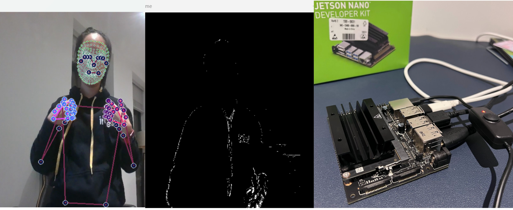

Dynamic British Sign Language Recognition on Edge Device
For my Final Year Project in 2023, I was inspired to develop a technology-driven solution for translating sign language into spoken language.
This inspiration stemmed from a challenge I observed during a 2018 TEDx Sunway University Talk when I collaborated with a deaf speaker and my colleague. The need for uninterrupted communication became apparent when our interpreter required a break.
This experience led me to explore how technology could effectively bridge the communication gap between sign and spoken languages.
My project focuses on implementing video British Sign Language recognition on Edge devices. This involves a comparative analysis of image feature extraction techniques and machine learning models.
I selected the Nvidia Jetson Nano as the embedded hardware for this project, motivated by Nvidia’s superior performance in inference times, its comprehensive support for machine learning optimization, and the robust capabilities of its hardware.
Furthermore, I am delving into various optimization strategies to enhance inference times on embedded devices. These include TensorFlow RT and CUDA parallel programming.
As this is an ongoing project, I look forward to providing more comprehensive details upon its completion.